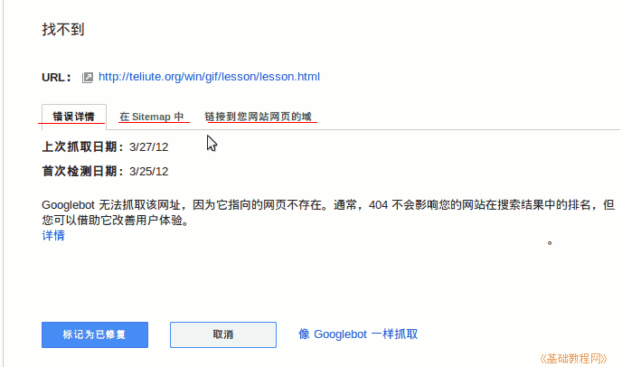

谷歌网站管理员工具使用指南
作者：TeliuTe 来源：基础教程网
九、抓取错误 返回目录 下一课在这里可以找到网站页面中的错误链接；
1、抓取错误
1）点击左边导航栏中的“故障诊断－抓取错误”；
2）在右边会显示google抓取的错误信息，一般是网址错误；
3）往下拉，可以看到具体的错误链接，按优先级排列，后边有检测的日期；
4）点击链接，进入错误的详细信息，该链接是否在sitemap中，以及这个链接所在的页面；

5）点击 Sitemap 标签，检查此链接是否包含在网站地图文件中；
6）点第三个“链接到您网站上的域”，可以查看是在哪个网页中的，然后到这个页面中去检查一下；
7）当修复好这个错误后，可以点下边的“标记为已修复”按钮，然后确认已修复；
8）这样一个一个修复掉所有错误，提交正确的sitemap.xml，等待google更新；
本节学习了抓取错误的基础知识，如果你成功地完成了练习，请继续学习下一课内容；
本教程由86团学校TeliuTe制作|著作权所有
基础教程网：http://teliute.org/
美丽的校园……
转载和引用本站内容，请保留版权信息和本站链接。